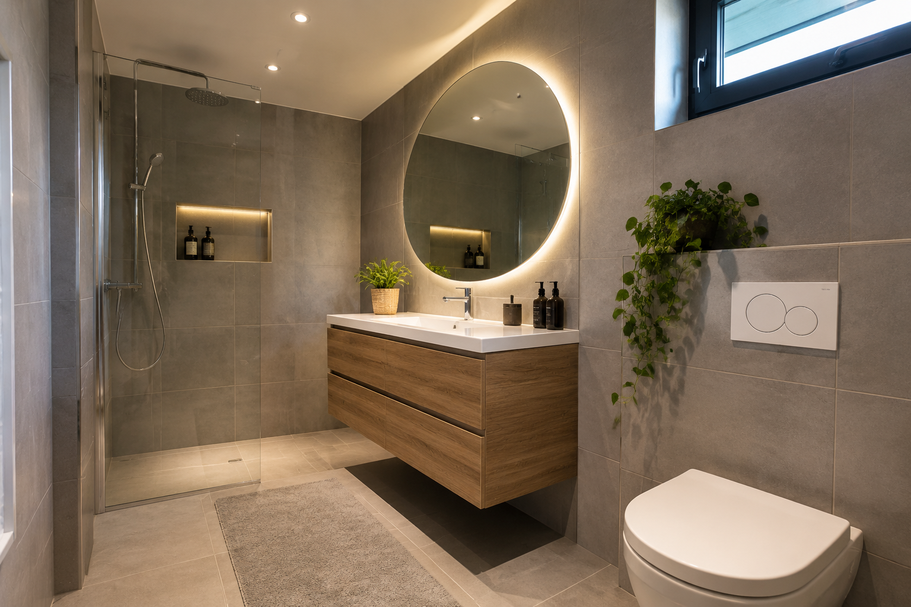

01 / DUURZAME VERWARMING
Duurzame verwarming
Van cv-ketels tot warmtepompen: wij helpen u met comfortabele en energiezuinige verwarmingsoplossingen.
Lees meer
Van CV-ketel tot lucht-water warmtepomp en van ventilatie-warmtepomp tot water-water warmtepomp kunnen wij u van dienst zijn.
Het gehele traject van aanvraag tot inbedrijfstelling nemen wij uit handen. Alles vindt plaats onder de daarvoor geldende certificeringen (BRL6000-25, BRL100 en BRL6000-21).
Bespreek uw mogelijkheden ↗